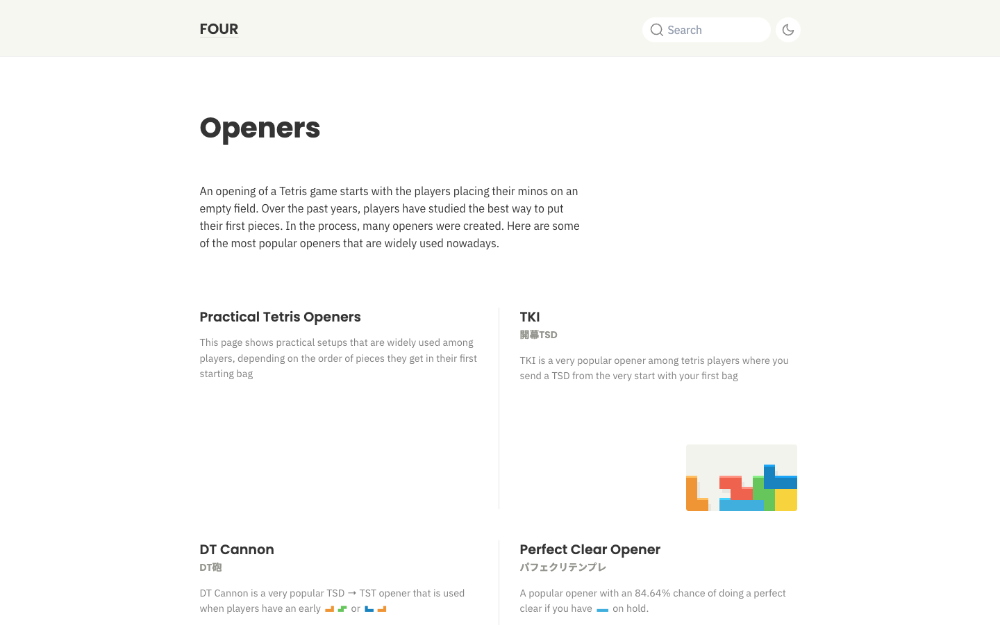
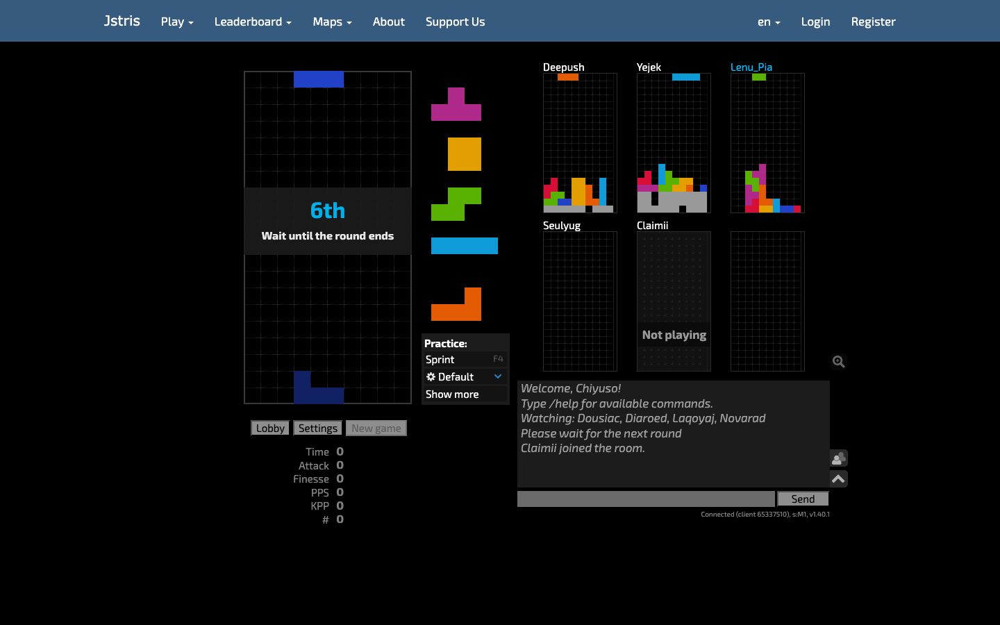
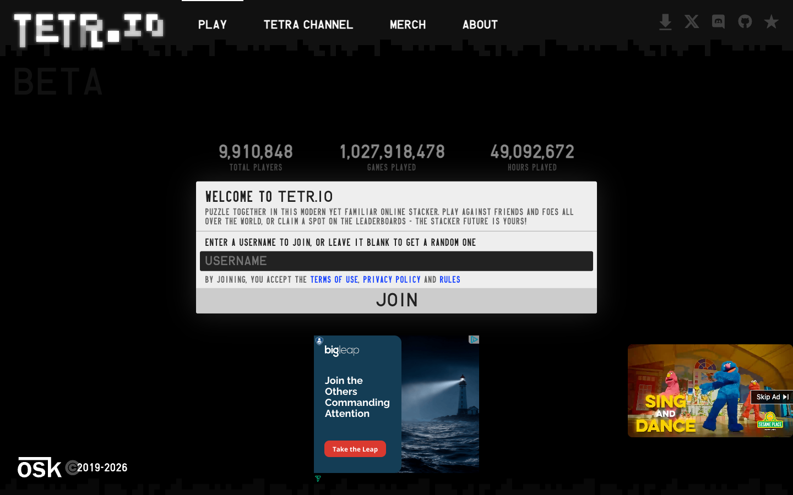
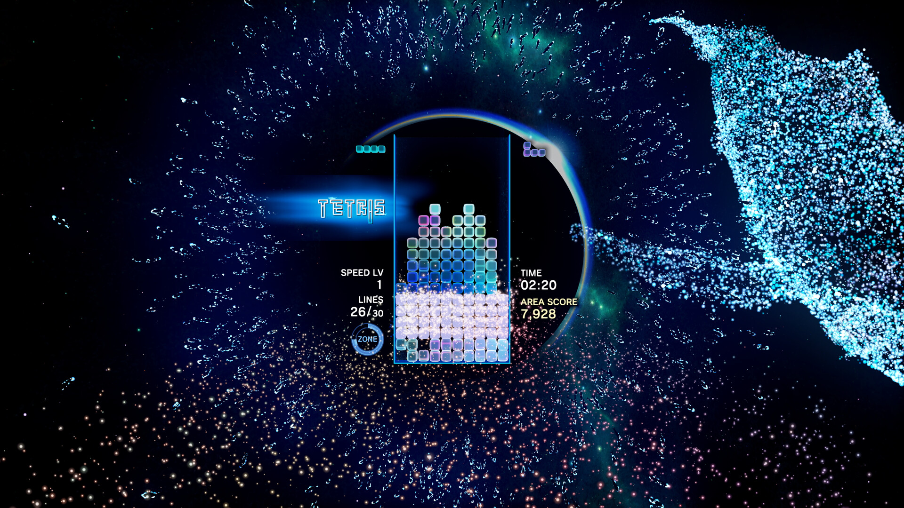
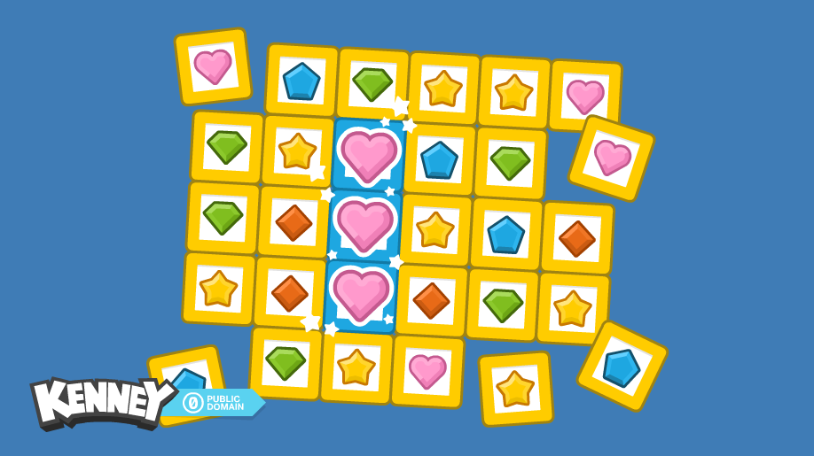

tetra — asset idea board
Exploration only — nothing here is production. Scavenged candidates to react
to, mapped against docs/quality-bar.md. Sources & licenses in README.md.
SFX candidates (CC0, Kenney) — click to audition
Grouped by tetra event. Multiple candidates per event on purpose.
Synthesized originals (ours) — the "designed in-house" route
Generated by audio/synth/generate.mjs — sketches of a dry/quiet/clicky character.
Music placeholders (CC0, Juhani Junkala)
title screen
level 1
Icon candidates
Lucide (ISC) — quieter, more "instrument":
Phosphor (MIT) — rounder, more "game":
Type candidates
0:42.117 · 2.31 PPS · 98% finesse — JetBrains Mono
0:42.117 · 2.31 PPS · 98% finesse — IBM Plex Mono
Sprint. Cheese. Survival. — Space Grotesk
Settings · Handling · Keybinds — Inter
HUD numbers want tabular figures; quality-bar §5.4: preload or bitmap-bake.
Reference clients (design discussion targets)

four.lol — calm, big type, cream. The closest existing voice to tetra's.

Jstris, live multiplayer room — the austere pole: six boards, stat column, zero ceremony.

TETR.IO entry — dark, dense, pixel-chrome (and the ads tetra will never have).

Tetris Effect: Connected (Steam press shot) — the maximalist pole; study the escalation, not the volume.
Sprite/particle scraps (CC0, Kenney Puzzle Pack 2)

Block-style and particle references for mockups; the real skin gets drawn, not stocked.